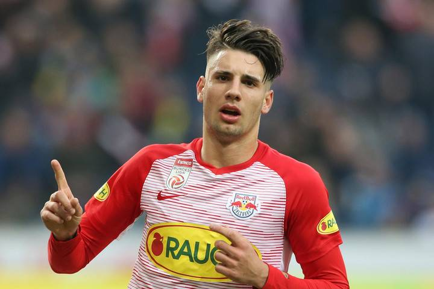

Szoboszlai Dominik

Szoboszlai Dominik (Székesfehérvár, 2000. október 25.[1] –) magyar válogatott labdarúgó, a válogatott
csapatkapitánya,[2] a Premier League-ben szereplő Liverpool támadó középpályása.[3]
2017 októberében a The Guardian a világ legtehetségesebb 17 éves futballistái közé sorolta,[4] majd 2019 márciusában
a goal.com az 50 legtehetségesebb csodagyerek 21. helyére rangsorolta.[5] Az Európai Labdarúgó-szövetség (UEFA) 2020
januárjában a világ ötven legtehetségesebb labdarúgója közé sorolta.[6] 2020 októberében bekerült a Golden Boy-díj
legjobb húsz labdarúgója közé, ahol a 8. helyen végzett.[7] Kétszer is minden idők legdrágább magyar játékosa volt,
először mikor a Leipzig, majd mikor a Liverpool szerződtette.
Vissza a futballhoz
Neuer
- Pelé
- Puskás Ferenc